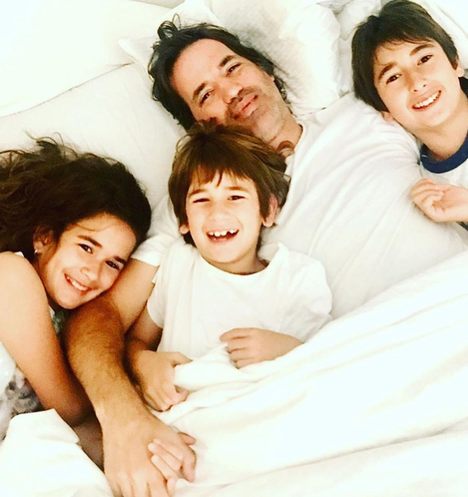

Te quiero mucho
Feliz día pa! Quiero desearte un muy lindo del padre porque, valga la redundancia, eso sos. Pero un padre es mucho más que el lazo de sangre que nos une. Un padre es una persona fuerte, graciosa, compañera, leal, y generosa. Ser padre implica sacrificar muchas cosas, como todos los sábados a la mañana que me llevas a los lugares mas remotos de Buenos Aires, a bancarte un partido de hockey que nunca ganamos. Y encima, hiciste el curso para ser juez de mesa, aunque próximamente te veo de árbitro. Siempre estás muy comprometido con todo lo que haces, y otra cosa a la que le pones voluntar, a parte de hockey por ejemplo, es el esfuerzo para mejorar nuestra relación. Como todas las relaciones, hay altibajos, momentos de sol y momentos de tormenta. No sabría cómo definir por lo que estamos pasando ahora mismo, pero si no nos matamos en el proceso, definitivamente nos va a hacer mas fuertes a nostors y a nuestros vínculo. Obviamente para hacerlo va a tomar mucho trabajo duro por parte de los dos, y creo que los dos estamos comprometidos a que funcione, los dos estamos dispuestos a esforzarnos. Tanto como los dos tenemos el mismo carácter y orgullo complicado, pero también compartimos el amor por la música y la guitarra, o la programación (aunque yo odie tecnología me gusta saber que puedo contar con tu ayuda). Bueno, ya voy cerrando, espero que tengas un muy muy muy lindo día, tan lindo como yo ;). Besitos te amo.
